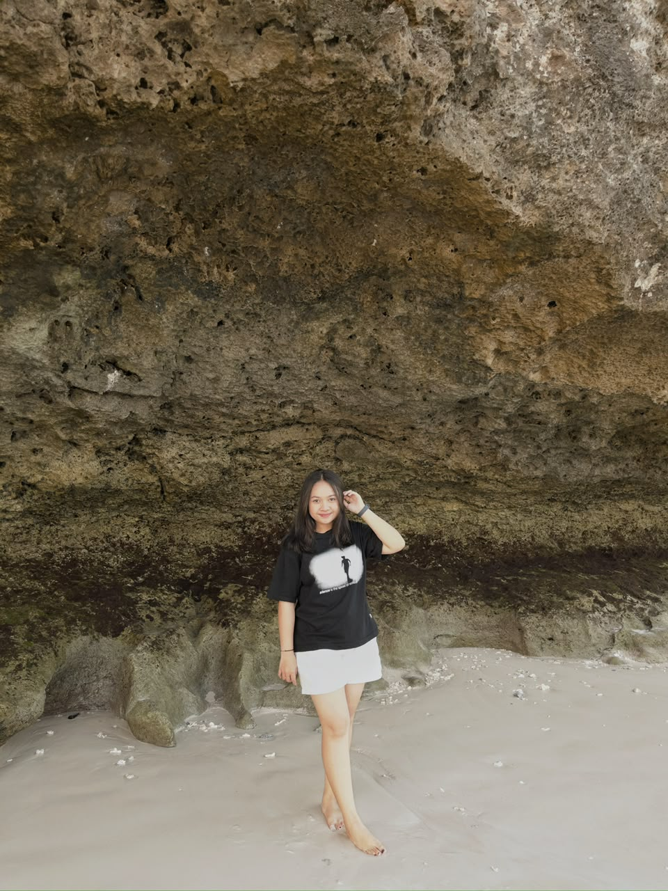

PERSONAL PORTFOLIO — 2026
Halo, saya Fany.
A curious mind with a creative side.
Mahasiswa Sistem Informasi yang memiliki ketertarikan pada teknologi, desain visual, dan dokumentasi kreatif.
Jelajahi Karya Saya
A little glimpse of me.
GET TO KNOW ME
A little about myself.
01 / ABOUT
Learning, creating, and growing.
Halo! Saya Tiffany Savitri Wilhelmina Djama, yang akrab disapa Fany, dengan NIM 682026043, mahasiswa Fakultas Teknologi Informasi, Program Studi Sistem Informasi di Universitas Kristen Satya Wacana Salatiga.
Saya memiliki ketertarikan pada dunia teknologi, desain visual, dan dokumentasi kreatif. Bagi saya, setiap proses belajar merupakan kesempatan untuk mencoba hal baru, mengembangkan ide, dan menghasilkan sesuatu yang bermanfaat.
Technology
Mengenal pemrograman dan teknologi informasi.
Visual Design
Membuat desain publikasi, presentasi, dan antarmuka.
Documentation
Fotografi, dokumentasi kegiatan, dan live report.
MY CREATIVE SIDE
Things I love to do.
Beberapa bidang yang sedang saya pelajari, kembangkan, dan eksplorasi selama perjalanan akademik maupun pengalaman pribadi.
Design & Creativity
Canva · Figma · Visual Design · UI Design
Programming
HTML · CSS · Python · C++
Documentation
Photography · Event Documentation · Live Report
Personal Skills
Communication · Teamwork · Creativity · Responsibility
A SELECTION OF MY WORK
Selected works.
Beberapa karya dan pengalaman yang menjadi bagian dari perjalanan belajar saya.

RF Shoes — Landing Page
Perancangan desain landing page untuk brand sepatu RF Shoes dengan konsep modern, minimalis, dan elegan.
Lihat hasil desain ↗
Canva Design Collection
Kumpulan karya desain poster kegiatan, publikasi media sosial, dan presentasi.
Lihat hasil desain ↗
Analisis Dampak Regulasi Pembatasan Social Commerce terhadap Pelaku UMKM Lokal
Karya tulis yang membahas dampak regulasi pembatasan social commerce terhadap UMKM konvensional dan digital melalui studi literatur.
Baca makalah ↗A DIFFERENT PERSPECTIVE
04 / BEHIND THE LENS
Di balik lensa.
Saya memiliki ketertarikan pada fotografi dan dokumentasi kegiatan. Saya terbiasa mengambil foto menggunakan ponsel maupun kamera serta melakukan peliputan langsung (live report) dalam berbagai kegiatan.
Bagi saya, dokumentasi bukan hanya tentang mengambil gambar, tetapi juga tentang mengabadikan momen dan menyampaikan suasana sebuah kegiatan.
Capturing moments, telling stories.A LITTLE MORE ABOUT ME
Places That Shaped Me.
Saya tumbuh dengan pengalaman tinggal di berbagai daerah karena mengikuti perpindahan pekerjaan orang tua. Dari Kalimantan, Bali, Sulawesi, hingga Jawa, setiap tempat memberikan pengalaman dan kenangan yang berbeda. Perjalanan tersebut mengajarkan saya untuk beradaptasi dengan lingkungan baru, mengenal berbagai suasana, dan menghargai setiap proses yang saya lalui.
A journey through places.
Tanjung Selor
Kalimantan Utara
Penajam Paser Utara
Kalimantan Timur
Nunukan
Kalimantan Utara
Singaraja
Bali
Makassar
Sulawesi Selatan
Malang
Jawa Timur
Things that make me happy.
Cooking
Menikmati proses memasak dan mencoba berbagai kreasi makanan.
Traveling
Menyukai pengalaman mengunjungi tempat baru dan menikmati suasana yang berbeda.
Photography
Mengabadikan momen dan menyimpan cerita melalui sebuah gambar.
LET'S CONNECT
Mari terhubung
dan bertukar cerita.
Terima kasih telah mengunjungi portofolio saya. Saya terbuka untuk bertukar ide, belajar hal baru, dan menjalin koneksi.
Hubungi Saya Instagram Saya Hubungi WhatsApp